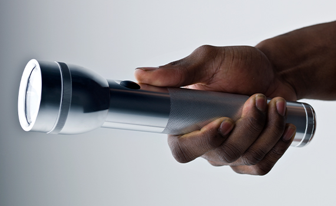
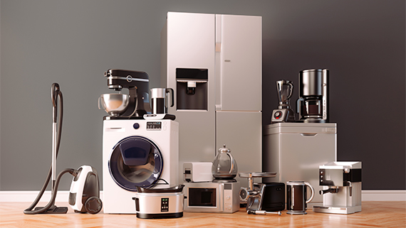
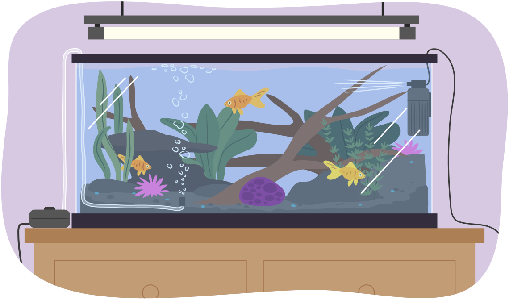
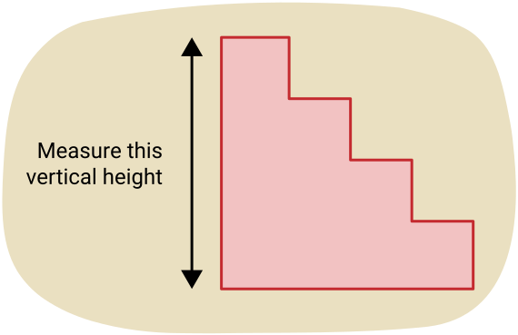
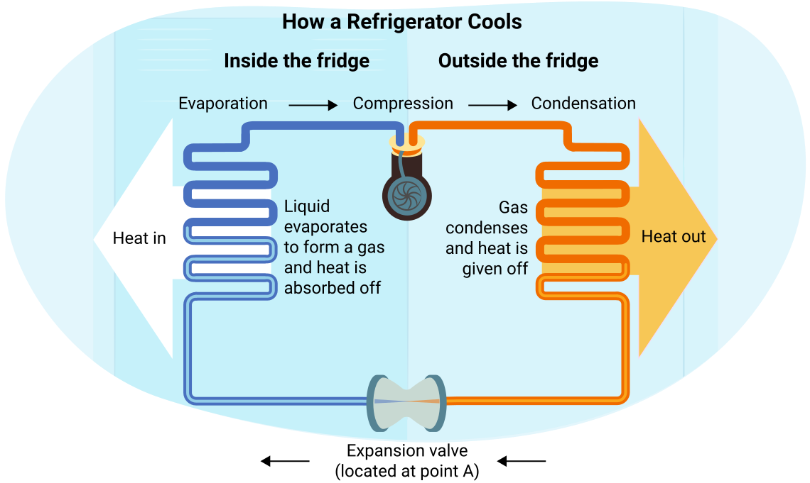
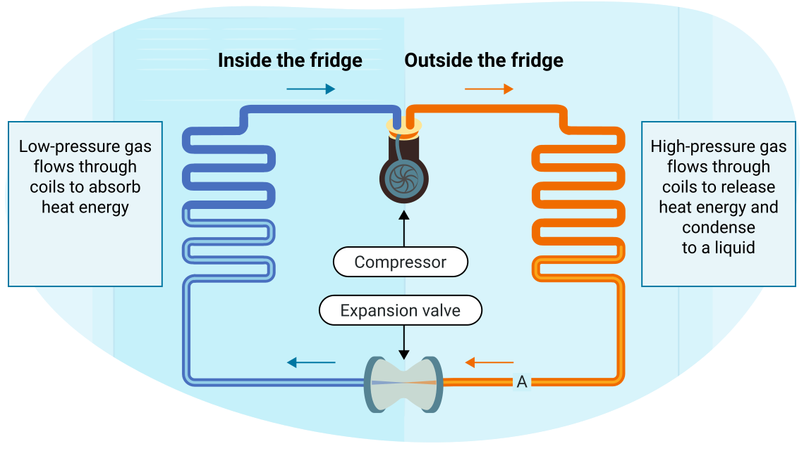
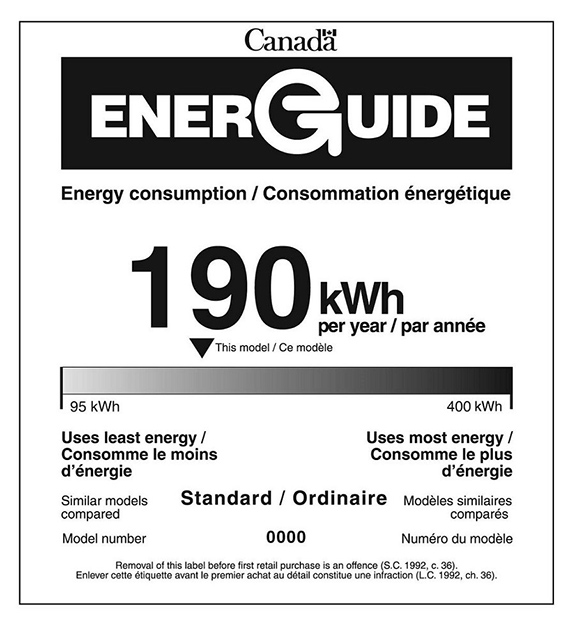

에너지의 형태
우리의 주요 에너지원은 태양이지만, 우리가 사용하는 대부분의 에너지는 사용하기 전에 여러 번 변환됩니다. 에너지는 다양한 형태로 존재하며 한 유형에서 다른 유형으로 쉽게 변환됩니다. 에너지는 생성되거나 파괴될 수 없지만, 저장되어 나중에 사용될 수 있습니다. 에너지가 형태를 바꿀 때, 일부는 항상 열에너지(thermal energy)로 변환되어 주변 환경으로 분산됩니다.
다음 이미지들을 살펴보고 아홉 가지 주요 에너지 형태와 관련된 예시를 찾아보세요.
노트
이미지에서 어떤 종류의 에너지가 존재했나요? 노트에 여러분의 생각을 기록하세요. 이 학습 활동의 나머지 부분을 진행하면서 여러분의 답을 되돌아보세요.
에너지원
다양한 형태의 에너지에 대해 생각해 보았으니, 이제 다음 이미지들에서 경험한 아홉 가지 에너지 형태에 대해 학습하겠습니다.
직접 해보기!
다음 두 열에서 일치하는 쌍을 선택하세요. 첫 번째 열에서 하나, 두 번째 열에서 하나를 선택하세요. 필요하다면 이전 이미지의 아홉 가지 에너지원을 복습하세요.
에너지 변환
에너지는 종종 한 형태에서 다른 형태로 변환됩니다. 불꽃놀이가 좋은 예입니다. 불꽃놀이는 화학 퍼텐셜 에너지에서 시작합니다. 불꽃놀이에 불이 붙으면, 에너지는 열에너지(열), 소리 에너지(불꽃놀이가 내는 소음), 복사 에너지(빛)로 변환됩니다. 이 에너지 변환은 다음과 같이 기록됩니다:
화학 퍼텐셜 에너지 → 복사 에너지 + 열에너지 + 소리 에너지
생각해 봅시다: 불꽃놀이 쇼는 매우 흥미롭고 중요한 명절에 많은 관심을 끕니다. 많은 가정에서 개인 명절의 시작이나 마무리에 개인 불꽃놀이 컬렉션을 가져와 점화합니다. 불꽃놀이는 고에너지이며 많은 사람들에게 사랑받습니다.
생각해보기
일부 사람들은 환경적 영향과 소음 공해 때문에 불꽃놀이를 금지해야 한다고 생각합니다. 불꽃놀이의 긍정적인 효과와 부정적인 효과에 대해 생각해 보세요. 불꽃놀이 금지를 지지하는지 반대하는지 고려해 보세요.

또 다른 예는 손전등입니다. 시작 에너지는 배터리에 저장된 화학 퍼텐셜 에너지입니다. 손전등을 켜면, 에너지는 복사 에너지(빛)와 열에너지(함께 발생하는 열)로 변환됩니다.
이 에너지 변환은 다음과 같이 기록됩니다:
화학 퍼텐셜 에너지 → 복사 에너지 + 열에너지
기술 발전과 에너지 사용을 고려해 봅시다:
에너지 소비자로서 우리는 끊임없이 에너지 절약을 권장받지만, 전기 기기에 대한 의존도는 매년 계속 증가하고 있습니다. 우리는 더 다양한 기기에 의존하고 더 많이 사용합니다. 그러나 동시에 기기의 에너지 효율도 증가했습니다. 특히 냉장고의 에너지 소비는 극적으로 감소했습니다.
백열전구에서 LED 전구로의 손전등 기술 발전으로 인해, 설계자들은 크고 무거운 손전등에서 모자나 스마트폰에도 장착할 수 있을 만큼 작은 부품으로 전환할 수 있었습니다. 자동차 조명 시스템은 할로겐에서 LED 기반 시스템으로 전환되고 있습니다. 가로등은 수은 및 니켈 금속 할라이드 전구에서 LED 전구로 교체되고 있습니다. 가정에서는 백열등과 형광등이 LED 기술로 전환되고 있습니다.
생각해보기
LED 전구와 같은 상당한 에너지 절약 기술의 도입이 환경에 미치는 영향을 생각해 보세요. 이에 대응하여 전기 생산을 줄여야 할까요, 아니면 여분의 전기를 생산적으로 사용할 방법을 찾아야 할까요?
직접 해보기!
다음 상황에서 발생하는 에너지 변환을 말해 보세요. 아홉 가지 주요 에너지 형태를 떠올리세요. 다음 두 열에서 일치하는 쌍을 선택하세요. 첫 번째 열에서 하나, 두 번째 열에서 하나를 선택하세요.
가전제품
냉장고는 왜 내부를 시원하게 유지하기 위해 뒷면이 뜨거워야 할까요? 이 수업에서는 일과 일률의 개념을 소개하기 위해 냉장고의 작동 원리를 살펴볼 것입니다.

일
물리학에서 일이라는 용어는 특정한 의미를 가집니다. 일상 언어에서 여러분은 완료해야 할 숙제나 직업을 나타내기 위해 일이라는 용어를 사용할 수 있습니다. 그러나 물리학자들은 일을 측정된 거리에 걸쳐 힘에 의해 물체에 전달되는 에너지의 양을 정의하는 데 사용합니다.
공식
힘이 물체를 움직이게 하면, 그 물체에 일이 행해진 것입니다.
다음 방정식은 역학적(물리적) 일에 대한 것입니다.
여기서
F는 가해진 힘이고,
d는 힘의 방향으로의 변위(displacement)입니다.
일의 단위는 뉴턴-미터이며, 이를 일반적으로 줄(J)이라고 합니다.
일의 개념을 이해하기 위해, 큰 교과서를 책상 위로 밀어 움직이는 것을 생각해 보세요. 여러분은 교과서에 일정한 힘을 가하고 책이 책상을 따라 변위됩니다. 따라서 여러분은 교과서에 일을 하고 있는 것입니다.
다음으로, 원래 교과서 위에 또 다른 큰 교과서를 올려놓고, 같은 거리만큼(책상을 따른 변위가 같음) 둘 다 움직이기 위해 더 큰 일정한 힘을 가합니다. 여러분은 힘에 의해 책에 한 일을 두 배로 늘린 것입니다. 다시 말해, 책에 전달되는 에너지의 양을 두 배로 늘려야 했습니다.
따라서 일은 책의 에너지 변화와 같다고 생각할 수 있습니다:
여기서 ΔE는 에너지 변화량입니다. 교과서의 경우, 에너지는 책과 표면 사이의 마찰로 인해 열에너지로 방출됩니다.
물체에 행해진 일의 분류
일에는 세 가지 범주가 있습니다: 물체에 행해지는 양의 일, 음의 일, 그리고 영의 일입니다.
양의 일, 음의 일, 그리고 영의 일의 차이는 무엇인가요?
- 양의 일은 물체에 에너지를 추가합니다.
- 음의 일은 물체에서 에너지를 제거합니다.
- 영의 일이 행해지면 물체에 에너지가 추가되지 않습니다.
예제: 양의 일
- 운동 준비를 위해 12 N의 힘으로 책상을 방 옆으로 2.0 m 밀 때 얼마나 많은 일이 행해지나요?
주어진 값:
미지수:
방정식:
대입:
결론:
책상을 밀기 위해 24 J의 일이 행해졌습니다.
- 소파를 5.0 m 밀기 위해 150 J의 일이 필요합니다. 소파에 얼마나 큰 힘을 가했나요?
주어진 값:
미지수:
방정식:
풀이:
결론:
소파에 의 힘을 가했습니다. (힘은 유효숫자 2자리를 가져야 하므로 과학적 표기법으로 나타내야 합니다.)
예제: 영의 일
힘이 가해졌지만 물체가 그 방향으로 움직이지 않으면 어떻게 될까요? 벽을 최대한 세게 미는 것을 상상해 보세요. 오랫동안 밀면 근육이 피로해질 것입니다. 얼마나 많은 일을 했나요?
공식을 사용하여 알아봅시다! 벽에 200 N의 힘으로 밀었다고 가정합시다.
영 줄의 일을 했습니다! 피곤하고 일을 한 것처럼 느낄 수 있지만, 물리학의 정의에 따르면 일이 행해지지 않았습니다.
또 다른 예를 생각해 봅시다. 여러 개의 식료품 봉지를 집으로 들고 올 때 몸이 아파진 적이 있나요?
봉지를 들고 있기 위해 힘을 가하고 있지만, 봉지를 들고 있는 동안 봉지가 위아래로 움직이지 않습니다. 식료품을 들고 있을 때 얼마나 많은 일이 행해지나요? 역시 답은 영이지만, 이번에는 다른 이유입니다. 앞으로 이동할 때, 식료품 봉지의 운동은 몸이 봉지에 가하는 힘에 대해 직각입니다. 힘이 변위에 수직(90°)일 때, 운동 방향으로 가해진 힘이 0 N이므로 일이 행해지지 않습니다.
힘이 가해졌지만 변위가 없으면 일이 행해지지 않습니다.
힘과 변위가 수직이면 일이 행해지지 않습니다.
직접 해보기!
이해도를 확인하기 위해 다음 문제를 풀어 보세요.
예제: 음의 일
힘이 변위의 반대 방향으로 가해지면 어떻게 될까요? 이 상황에서 일이 행해지나요? 네, 일이 행해지지만 음의 일입니다.
힘이 변위와 반대이면, 힘에 음의 부호가 붙습니다.
학생이 매트 위에서 장난감을 바닥을 따라 밀었습니다. 6.5 N의 마찰력이 장난감을 1.2 m 이동한 후 멈추게 했습니다. 마찰이 매트에 한 일을 계산하세요.
주어진 값:
(힘과 변위가 반대 방향이므로 음수입니다. 힘을 양수로 하고 변위를 음수로 해도 같은 결과를 얻습니다.)
미지수:
방정식:
풀이:
결론:
마찰이 한 일은 -7.8 J입니다.
마찰력은 장난감에 에너지를 추가한 것이 아니라 실제로 매트에서 바닥으로 열에너지의 형태로 에너지가 전달되게 했습니다. 장난감의 에너지가 감소했으며, 이는 풀이에서 음의 부호로 표시됩니다. 음의 일은 힘이 가해진 물체에서 에너지가 전달되는 것을 의미합니다. 이는 물체의 에너지가 감소함을 의미합니다.
잠시 쉬어가기!
훌륭합니다! 일에 관한 섹션을 방금 완료했습니다. 다음 일률 섹션으로 넘어가기 전에 잠시 쉬어가기 좋은 시간입니다.
일률
건물 1층에서 꼭대기 층까지 수직 변위 20 m인 곳으로 여행 가방을 옮겨야 합니다. 여행 가방을 들어 올리는 데 30 N이 필요합니다.
여행 가방을 꼭대기 층으로 옮기는 데 필요한 일은 30 N × 20 m = 600 J입니다. 두 가지 선택지가 있습니다:
a) 직접 들고 올라가기
b) 엘리베이터에 태우기
두 경우 모두 600 J의 일이 행해져야 합니다. 두 방법의 차이는 무엇인가요? 시간입니다!
여행 가방을 꼭대기 층까지 올리는 데 4분(240초)이 걸립니다. 엘리베이터는 20초가 걸립니다.
여러분은 600 J / 240 s = 2.5 J/s의 속도로 일(에너지 소비)을 할 수 있습니다. 엘리베이터는 600 J/20 s = 30 J/s의 속도로 일(에너지 소비)을 할 수 있습니다.
정의
일이 행해지는 속도를 일률이라고 합니다. 일률은 와트(watt) 단위로 측정되며, 이는 초당 줄과 같습니다.
노트를 복습할 때, 일의 기호()와 와트의 약어()를 구별하도록 주의하세요. 일의 변수는 보통 이탤릭체로 쓰고, 와트 기호는 보통 이탤릭체 없이 씁니다.
방금 살펴본 예에서, 여행 가방을 들어 올릴 때 여러분의 일률 출력은 2.5와트(2.5 W)였습니다. 엘리베이터의 일률 출력은 30와트(30 W)였습니다.
공식
일률의 방정식은 다음과 같습니다:
일(W)과 에너지 변화(ΔE)는 같은 것임을 기억하세요.
기기의 일률 정격
여러분은 전구와 히터를 설명하는 방법으로서 와트에 익숙할 것입니다. 와트 수는 전구나 히터가 전기 에너지를 빛이나 열에너지로 변환할 수 있는 속도를 나타냅니다. 일률은 항상 양의 값으로 간주됩니다.
이 표는 다양한 가정용 기기의 일률을 제공합니다. 한 달 동안 기기가 사용되는 시간을 알거나 추정할 수 있다면, 한 달 동안 기기가 소비한 일 또는 에너지를 계산할 수 있습니다.
다음 표의 정보는 각 기기가 얼마나 빠르게 에너지를 사용하는지 나타냅니다. 일부 기기는 오랜 시간 사용되고, 다른 기기는 짧은 시간 사용됩니다.
일반 가정용 기기의 일률 (켜져 있을 때 소비되는 일률):
| 기기 | 일률 |
|---|---|
| 수족관 펌프 | 30 W |
| 실외 온수 욕조 | 1000 W |
| 온수기 | 3800 W |
| 중앙 에어컨 | 3500 W |
| 4 W LED 전구 | 4 W |
| 60 W 백열전구 | 60 W |
| 스마트폰 | 0.004 W |
| 노트북 컴퓨터 | 20 W |
| 헤어 드라이어 | 1000 W |
| LED (55") 텔레비전 | 57 W |
예제: 기기가 소비하는 에너지
하루 동안 헤어 드라이어와 수족관 펌프가 사용하는 에너지양을 비교해 봅시다. 헤어 드라이어는 하루에 약 15분만 사용됩니다. 펌프는 계속 작동해야 하므로 하루 24시간 사용됩니다.
헤어 드라이어가 사용하는 에너지
주어진 값:
미지수:
방정식:
풀이:
결론:
헤어 드라이어가 사용하는 에너지는 900,000 J입니다.

수족관 펌프가 사용하는 에너지
주어진 값:
미지수:
방정식:
풀이:
결론:
수족관 펌프가 사용하는 에너지는 3,000,000 J입니다.
수족관은 헤어 드라이어보다 일률 정격이 낮음에도 불구하고 하루에 더 많은 에너지를 사용합니다.
대량의 에너지가 사용될 때, 줄(J) 대신 킬로와트시(kWh) 단위로 에너지 사용량이나 행해진 일을 측정하는 것이 더 편리합니다. 킬로와트시는 1 kW(1,000 W)의 일률로 1시간 동안 사용되는 에너지입니다.
1 kWh = 1000 J/s × 3600 s = 3.6 × 106 J
수족관 펌프의 이전 예에서, 2.6 × 106 J을 3.6 × 106 J으로 나누어 kW/h로 변환할 수 있습니다. 수족관 펌프가 사용한 에너지는 2.6 × 106J 또는 0.72 kWh입니다.
탐구: 인체 일률 (계단 오르기)
일률과 일이라는 용어는 일상 대화에서 종종 혼용되므로, 다음 실험은 이 용어들을 구별하는 데 도움이 될 것입니다.
실험 활동
계단 오르기
관찰 결과를 기록한 다음 실험 보고서의 분석 및 결론 부분을 완성하세요. 탐구를 완료할 수 없거나 하지 않기로 선택한 경우, 다음 결과(새 창에서 열림)를 사용할 수 있습니다.
계단을 올라갈 때 행해지는 일과 발생하는 일률을 구하는 것입니다.
초시계(또는 초침이 있는 시계), 체중계, 줄자 또는 미터자
- 줄자 또는 미터자를 사용하여 다음 그림에 표시된 대로 계단의 수직 높이를 측정합니다. 이 값을 관찰 표에 기록하세요. 집, 실외 또는 공공 건물에서 이 작업을 수행할 수 있습니다. 주의하세요.

- 체중계를 사용하여 kg 단위로 질량을 측정합니다. 이 값을 관찰 표에 기록하세요. 체중계가 파운드로 측정하는 경우, 파운드 수에 0.45를 곱하여 kg 수를 구하세요.
- 계단을 올라가는 데 걸리는 시간(초)을 측정합니다. 이 값을 관찰 표에 기록하세요.
- 계단을 조깅하거나 뛰어 올라가는 데 걸리는 시간(초)을 측정합니다. (계단에서 뛰어갈 때는 항상 매우 조심하세요!) 이 값을 관찰 표에 기록하세요.
다음 관찰 표에 값을 기록하세요.
| 계단 높이 (미터) | |
| 나의 질량 (kg) | |
| 걷기 시간 (초) | |
| 뛰기 시간 (초) |
- 계단을 올라갈 때 중력에 대항하여 여러분의 질량을 들어 올리는 데 행해진 일을 구하세요.
- 계단을 걸어 올라갈 때 발생시킨 일률을 구하세요.
- 계단을 뛰어 올라갈 때 발생시킨 일률을 구하세요.
실험 결과를 사용하여, 학생이 계단을 올라갈 때 가장 큰 일률을 발생시킬 수 있는 방법을 설명하세요.
가전제품: 냉장고
냉장고는 내부는 차갑지만 뒷면의 코일은 뜨겁도록 설계되어 있습니다. 열에너지가 냉장고 내부에서 제거된 후 냉장고 뒷면의 코일을 통해 공기 중으로 방출됩니다. 이 과정에서 문을 열지 않고 냉장고 내부에서 외부로 에너지가 전달됩니다.
1990년에 비해 냉장고의 에너지 효율이 훨씬 향상되었지만, 주거용 에너지 소비는 현저히 증가했습니다. 왜 이런 일이 일어났다고 생각하나요? 답하기 전에 다음 탭을 살펴본 후 예시 답안과 여러분의 생각을 비교해 보세요.
소비자들이 더 많은 가전제품(일부 가정에는 세 대 이상의 텔레비전이 있음)과 더 다양한 종류를 사용하고 있는 것으로 보입니다. 에어컨 설치가 늘어나고 더 큰 집이 지어지고 있습니다.
냉장고: 작동 원리
냉장고에서 일어나는 두 가지 중요한 과정은:
압축: 기체가 액체로 응축됩니다. 이 과정에서 열이 방출됩니다(주변이 따뜻해짐).
팽창: 액체가 증발하여 기체가 됩니다. 이 과정에서 주변에서 열이 흡수됩니다(주변이 시원해짐).
냉장고는 매우 낮은 온도에서 증발하는 액체(냉매)를 사용하여 이 두 가지 효과를 결합합니다. 이 액체는 팽창 밸브를 통해 냉장고 내부의 저압 코일로 방출되어 기체로 변하면서 열에너지를 흡수합니다. 그런 다음 따뜻해진 기체는 압축기에 의해 압축되고 냉장고 외부의 일련의 코일을 통과하면서 다시 액체로 변하며 열에너지를 방출합니다.
다음 그림은 냉장고가 압축과 팽창을 사용하여 내부의 물건을 냉각하고 외부로 열을 방출하는 방법을 보여줍니다.

다음 페이지의 이미지를 살펴보세요. A 지점에서 시작하여 화살표 방향으로 냉매 기체의 흐름을 따라가 보세요. A 지점에서 냉매는 액체입니다. 액체가 팽창 밸브를 통과하면서 기체로 변합니다. 이 차가운 냉매 기체는 냉장고 내부의 코일을 따라 이동하면서 냉장고 내용물의 열에너지를 흡수합니다. 기체가 압축기에 도달합니다. 따뜻해진 냉매 기체가 압축기를 통과하면서 다시 액체로 응축됩니다. 냉장고 내부의 열에너지가 냉장고 외부의 공기로 성공적으로 전달되었습니다. 그 결과 냉장고 내부는 냉장고가 있는 방보다 더 시원합니다.

효율
냉장고는 압축기를 작동시키기 위해 전기 에너지를 사용하며, 압축기는 압축기와 펌프 역할을 모두 합니다. 냉장고 내부와 외부 사이의 온도 차이를 유지하기 위해 제조업체들은 1990년 이후 냉장고 부품을 개선해 왔습니다. 더 좋은 품질과 더 두꺼운 단열재, 그리고 개선된 문 밀봉재가 이러한 온도 차이를 유지하여 냉장고가 덜 열심히 작동하도록 도왔습니다. 압축기와 같은 기계적 부분도 에너지를 덜 사용하도록 개선되었습니다. 일반 냉장고의 에너지 소비는 1990년의 연간 1000킬로와트시에서 오늘날 그 절반 미만으로 감소했습니다.
EnerGuide
EnerGuide 라벨은 가전제품의 에너지 성능에 관한 사실을 나타내고 해당 가전제품이 캐나다의 최소 에너지 효율 기준을 충족하는지 확인하기 위해 부착되는 라벨입니다. 가전제품의 순위를 매기거나 추천을 제공하지는 않지만, 소비자들은 제공된 정보를 사용하여 다양한 가전제품의 에너지 사용량을 비교할 수 있습니다.
다음은 EnerGuide 라벨의 예입니다:

EnerGuide 라벨의 큰 숫자는 연간 가전제품의 에너지 소비 추정치입니다. 가전제품을 1년간 운영하는 데 드는 비용을 알기 위해서는 해당 지역의 전기 요금을 알아야 합니다. 이 정보는 전기 요금서에서 찾을 수 있습니다.
EnerGuide 라벨은 가전제품의 유형과 크기도 표시합니다. 라벨에는 등급 막대도 있어, 같은 종류의 가전제품 중 가장 에너지 효율적인 모델과 가장 비효율적인 모델에 비해 해당 가전제품이 어디에 위치하는지 나타냅니다. 가전제품의 분류는 EnerGuide 가전제품 목록에서 찾을 수 있습니다. 이 가전제품은 막대의 화살표가 가장 낮은 에너지 소비가 있는 왼쪽 끝에 가까우므로 매우 에너지 효율적입니다.
작은 에너지 변화는 줄 단위를 사용하여 가장 잘 설명되지만, 기계에서 발생하는 큰 에너지 변화는 kWh 단위를 사용하여 가장 잘 설명됩니다.
전기 비용
EnerGuide 라벨의 정보를 사용하여 가전제품 운영 비용을 구하려면 이 공식을 사용하세요.
공식
연간 비용 = EnerGuide 등급 × kWh당 전기 요금
EnerGuide 등급이 연간 190 kWh인 식기 세척기의 연간 및 주간 운영 비용을 계산하세요. 전기의 평균 요금은 kWh당 $0.12입니다.
노트
노트에 EnerGuide에 관한 다음 표를 완성하세요.
| 텔레비전 | 의류 건조기 | |
|---|---|---|
| EnerGuide 등급 | 264 kWh/yr | 910 kWh/yr |
| 전기 비용 | $0.13/kWh | $0.13/kWh |
| 연간 비용 | $34.32/year | $118.30/year |
| 주간 에너지 사용량 | $34.32/year | $118.30/year |
| 주간 운영 비용 | $0.66/week | $2.28/week |
캐나다 표준 위원회의 역할
캐나다 표준 위원회(Standards Council of Canada)는 캐나다인이 사용할 제품의 안전 및 설계 표준을 만들기 위해 노력합니다. 표준은 제품이 안전하고 이상적으로 효율적이며 환경에 미치는 영향을 최소화하기 위한 의도로 기술 전문가들에 의해 만들어집니다. 표준을 변경하고 시행하는 데는 시간이 걸립니다. 예를 들어, 모든 미래의 가정용 난방 시스템을 천연가스 기반 보일러(높은 온실가스 배출)에서 히트 펌프(온실가스 배출을 줄이는 효율적인 전기 냉난방 장치)로 전환하는 요구 사항이 있다면, 표준이 만들어지고, 시행 일자가 설정되고, 제조업체에게 기존 표준에서 업데이트된 표준으로 전환할 시간이 주어질 것입니다.
기술 공급 측면에서 확실한 승자와 패자가 있을 것입니다 - 가스 보일러 제조업체는 장기적으로 사업을 접을 것이고, 히트 펌프 제조업체는 새롭고 훨씬 큰 시장을 가지게 될 것입니다. 천연가스 공급업체는 시장을 잃게 되고 전기 배전 및 발전 회사는 시장이 증가할 것입니다. 가스에서 전기 난방으로 전환하는 기존 주택은 증가된 암페어 수요를 감당하기에 충분히 큰 전기 공급 케이블과 배전반이 없을 수 있습니다. 기술이 변하면 상황이 정말 복잡해집니다.
결론은: 표준이 변경되면, 영향을 받는 제품을 설치하는 모든 사람이 이를 준수해야 합니다. 이러한 변화하는 표준에서 시장이 보통 선도합니다.
성찰
앞으로 몇 년간의 삶을 생각해 보세요. 대학교나 전문대학에서 학업을 계속하거나, 견습생으로 또는 집을 떠나 일하기로 계획하고 있을 수 있습니다. 자신의 에너지 요금을 납부하거나 공유해야 할 수도 있습니다. 스토브나 냉장고를 구입해야 할 수도 있습니다. 구매하기 전에 EnerGuide 라벨을 잘 읽어보세요 - 대안보다 훨씬 더 많은 에너지를 사용하는 가전제품을 선택할 수도 있습니다.
여러분은 일상 가전제품의 효율과 일률 정격, 그리고 연간 관련 비용에 대해 학습했습니다.
일부 지역사회에서는 시간대별 요금제가 사용되어 "비첨두" 수요 시간대에 에너지 사용을 촉진하여 시스템에 과부하가 걸리지 않도록 합니다.
직접 해보기!
선호하는 검색 엔진을 사용하여 여러분의 지역사회의 전력 발전 공급업체/배전업체를 검색하여 시간대별 요금제가 있는지 확인하세요. Toronto Hydro 또는 HydroOne 웹사이트를 방문하여 이 이니셔티브에 대해 더 자세히 알아볼 수도 있습니다. 인터넷 접속이 안 되는 경우, 다음 제공된 기사 시간대별 요금제: 빠른 가이드새 창에서 열림에서 더 자세히 알아볼 수 있습니다.
현재 "첨두" 요금과 "비첨두" 요금을 찾아보세요.
이 값들을 사용하여, "비첨두" 시간대에만 식기 세척기(이전 예제의)를 사용하면 얼마나 절약할 수 있는지 계산하세요.
비용 절감이 놀라울 수 있습니다. "첨두" 수요 시간대에 켜져 있는 다양한 가전제품과 기기에 대해 생각해 보세요. 비첨두 시간대에 가전제품을 사용하면 돈을 절약할 뿐만 아니라 "첨두" 수요 시간대에 에너지를 제공하기 위해 더 많은 발전소가 필요한 것을 줄여줍니다. 이후 학습 활동에서 주거용 에너지 소비를 결정하는 데 사용되는 스마트 미터에 대해 더 배울 것입니다.
시간대별 요금제는 오랫동안 시행되어 왔으며 일반적으로 받아들여지고 있습니다.
자기 점검 퀴즈
이해도를 확인하세요!
다음 자기 점검 퀴즈를 완성하여 현재 학습 위치와 집중해야 할 영역을 파악하세요.
이 퀴즈는 피드백 전용이며 성적에 포함되지 않습니다. 이 퀴즈에 대한 시도 횟수는 무제한입니다. 시간을 들여 최선을 다하고 제공된 피드백을 반영하세요.
퀴즈를 눌러 이 도구에 접속하세요.